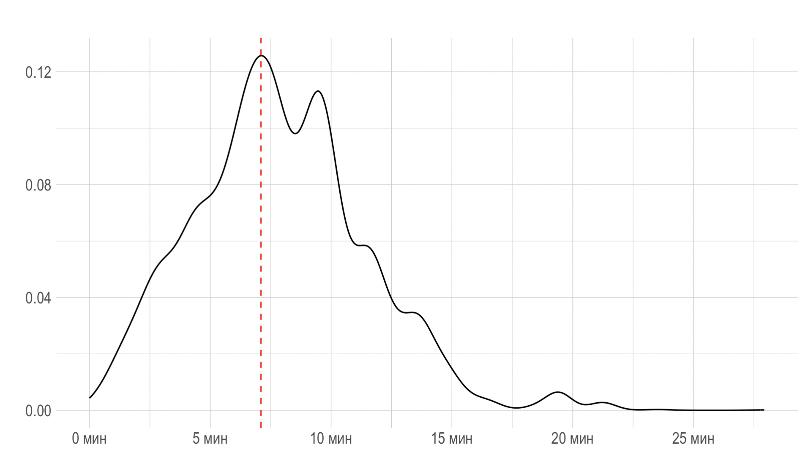
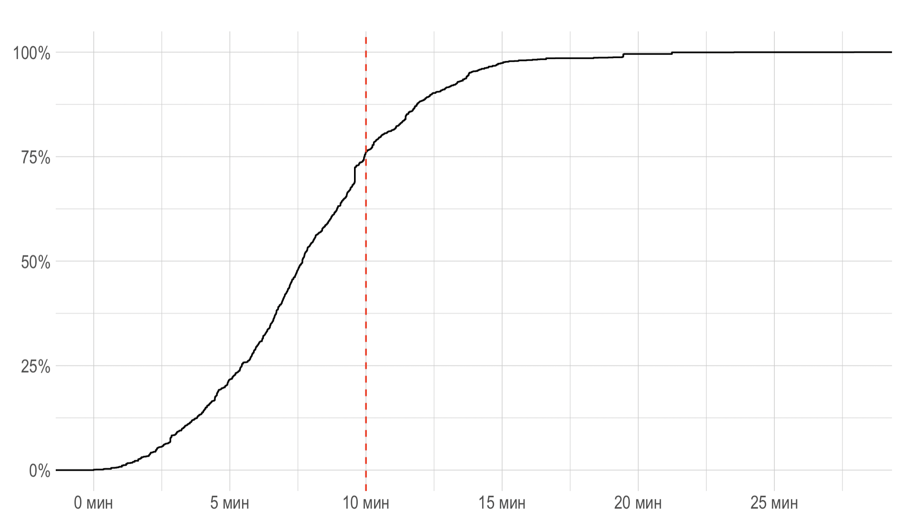

# общие библиотеки
library(tidyverse)
library(magrittr)
# работа с географическими данными
library(osmdata)
library(osrm)
library(sf)
# шкала масштаба на карте
library(ggspatial)
# future! 🚀
library(future)
plan(sequential)Введение
Для анализа топологии дорожной сети города существует множество различных инструментов. Например, библиотека Network analysis library геоинформационной системы QGIS позволяет на основе географических данных (линейных векторных слоев) создавать графы как структуры данных и работать с ними как с математическими объектами, а также использовать дополнения, написанные на языке Python. Модуль QNEAT3 для QGIS также предлагает расширенные алгоритмы сетевого анализа, которые варьируются от простого решения кратчайшего пути до более сложных задач, таких как вычисление изохрон (также известных как зоны обслуживания, полигоны доступности), см. также главу Анализ транспортных сетей из практикума [А. Энтин, Т. Самсонов, А. Карпачевский].
В языке программирования R существует библиотека sfnetworks, цель которой – работа с геопространственными сетями, т.е. графами, встроенными в географическое пространство. Это означает, что как узлы, так и ребра графа могут быть представлены в виде географических объектов. Такие структуры играют важную роль во многих различных областях, начиная от транспортного планирования и логистики, заканчивая экологией и эпидемиологией.
Библиотека sfnetworks сочетает возможности двух популярных библиотек: sf, учитывающей пространственные характеристики данных и tidygraph (на основе igraph) для анализа графов. Структура и характеристики геопространственных сетей выходят за рамки стандартной топологии графов, и поэтому при их анализе крайне важно явно учитывать пространственные особенности, например, географические проекции. В библиотеку sfnetworks внедрены процедуры расчета кратчайшего пути, очистки сети и модификации топологии, что в совокупности с возможностями интегрирования в рабочие процессы tidyverse, делает ее великолепным инструментом. Отметим сходство данного инструмента с известной библиотекой OSMnx, а также библиотекой Pyrosm языка программирования Python.
Операции с графом дорожной сети
Библиотеку sfnetworks можно установить одним из способов: из репозитория CRAN
install.packages("sfnetworks")либо с GitHub
remotes::install_github("luukvdmeer/sfnetworks")Загрузим библиотеки, которые нам понадобятся.
Базовая карта
В своем исследовании мы будем опираться на результат предыдущей записи блога, в котором были получены картографические данные дорожной сети города (в нашем случае это г. Красноярск). Соответственно, данные и переменные относятся к предыдущей статье.
Допустим, что с помощью библиотеки osmdata мы загрузили необходимые данные из OpenStreetMap, визуализируем их.
base_map +
# географические границы части города
coord_sf(xlim = c(92.75, 93.04),
ylim = c(55.98, 56.09),
expand = FALSE) +
# шкала аннотаций
annotation_scale(location = "tl",
width_hint = 0.5,
style = "ticks") +
theme_void(){kind=link}
Граф дорожной сети
Предположим, что основной объект, который мы загрузили из OpenStreetMap, отвечающий за дорожную сеть носит название streets. Выделим только объекты стандарта Simple feature (см. также [Т.Е. Самсонов]), которые имеют тип LINESTRING.
streets_lines <- streets |>
dplyr::select(osm_id,
oneway,
highway) %>%
filter(
st_geometry_type(.)
%in% c("LINESTRING")
)Затем, аналогично [Т.Е. Самсонов] и [Dealing with one-way edges] продублируем линии, не соответствующие дорогам с односторонним движением для того, чтобы имитировать дороги с двусторонним движением.
streets_double_lanes <- streets_lines |>
filter(is.na(oneway) | oneway != "yes") |>
st_reverse() |>
bind_rows(streets_lines)Загрузим библиотеку sfnetworks.
library(sfnetworks)
# работа с графами в R
library(tidygraph)Теперь, чтобы сделать граф из дорожной сети, нужна буквально одна команда из библиотеки sfnetworks.
net <- as_sfnetwork(streets_double_lanes) |>
# географическая проекция
st_transform(4326)Получившийся граф, который соответствует дорожной сети, представляет собой tidy-формат с сохранением геометрических свойств, где каждое наблюдение имеет свое местоположение в географическом пространстве.
net# A sfnetwork with 32911 nodes and 79928 edges
#
# CRS: EPSG:4326
#
# A directed multigraph with 12117 components with spatially explicit edges
#
# A tibble: 32,911 × 1
geom
<POINT [°]>
1 (93.00469 56.06684)
2 (92.99103 56.06949)
3 (93.01373 56.06508)
4 (93.02202 56.06271)
5 (93.02498 56.06045)
6 (93.0251 56.06319)
# ℹ 32,905 more rows
#
# A tibble: 79,928 × 6
from to osm_id oneway highway geom
<int> <int> <chr> <chr> <chr> <LINESTRING [°]>
1 1 2 25375397 <NA> primary (93.00469 56.06684, 93.00009 56.06774, 92…
2 3 4 25375423 <NA> primary (93.01373 56.06508, 93.01632 56.06459, 93…
3 1 3 25375424 <NA> primary (93.00469 56.06684, 93.01373 56.06508)
# ℹ 79,925 more rowsНанесем поверх дорожной сети получившийся граф. Как видно, практически вся дорожная сеть покрывается графом.
Код: граф дорожной сети
base_map +
# здания и строения
geom_sf(data = buildings, linewidth = 0.15) +
# ребра графа
geom_sf(data = st_as_sf(net, "edges"),
col = "red", alpha = 0.4) +
# вершины графа
geom_sf(data = st_as_sf(net, "nodes"),
col = "maroon", alpha = 0.4,
size = 0.8) +
# географические границы части города
coord_sf(xlim = c(92.87, 92.98),
ylim = c(56.03, 56.07),
expand = FALSE)
Сглаживание графа дорожной сети
Построенный граф может содержать узлы, имеющие только одно входящее и одно выходящее ребро. Для таких задач, как вычисление кратчайших путей, такие узлы избыточны, поскольку они не представляют собой точки, откуда могут быть выбраны разные направления для ориентированных графов, либо, в неориентированных графах, это могут быть любые узлы только с двумя инцидентными ребрами. Такого рода узлы мы назовем псевдоузлами. Для уменьшения сложности графа в последующих операциях их удаляют, проводя процедуру сглаживания. Функция to_spatial_smooth() итеративно сглаживает псевдоузлы и после каждого удаления объединяет геометрии строк двух затронутых ребер вместе в новую геометрию одной строки. Также, учтем тип дорог для инцидентных ребер.
library(tidygraph)
smoothed_net <- convert(net, to_spatial_smooth,
require_equal = "highway")Код: сглаженный граф дорожной сети
# пространственное сглаживание
base_map +
# здания и сооружения
geom_sf(data = buildings, linewidth = 0.15) +
# ребра графа
geom_sf(data = st_as_sf(smoothed_net, "edges"),
col = "red",
linewidth = 0.7,
alpha = 0.4) +
# вершины графа
geom_sf(data = st_as_sf(smoothed_net, "nodes"),
col = "maroon", alpha = 0.4,
size = 0.8) +
# географические границы части города
coord_sf(xlim = c(92.87, 92.98),
ylim = c(56.03, 56.07),
expand = FALSE) +
theme_void()
Пространственная фильтрация графа дорожной сети
Мы можем сделать пространственную фильтрацию полученного графа на основе пространственных отношений. Например, можно задать прямоугольник, по которому необходимо обрезать граф.
# полигон для кропа
crop_polygon <-
tibble(lon = c(92.87, 92.98),
lat = c(56.03, 56.07)) |>
st_as_sf(coords = c("lon", "lat"),
crs = 4326) |>
st_bbox() |>
st_as_sfc()# кроп по полигону
net_polygon_filtered <- st_filter(net, crop_polygon)Код: пример пространственной фильтрации графа дорожной сети
my_epsilon = 0.01
# пространственная фильтрация по прямоугольнику
base_map +
# здания и сооружения
geom_sf(data = buildings, linewidth = 0.1) +
# граница прямоугольника
geom_sf(data = crop_polygon,
alpha = 0.2,
linewidth = 0.8,
color = "black") +
# ребра графа
geom_sf(data = st_as_sf(net_polygon_filtered, "edges"),
col = "red", alpha = 0.4) +
# вершины графа
geom_sf(data = st_as_sf(net_polygon_filtered, "nodes"),
col = "maroon", alpha = 0.4,
size = 0.7) +
# географические границы части города
coord_sf(xlim = c(92.87-my_epsilon, 92.98+my_epsilon),
ylim = c(56.03-my_epsilon/2, 56.07+my_epsilon/2),
expand = FALSE) +
theme_void()
Немного более интересный случай касается районирования. Скажем, пусть граф необходимо рассмотреть только выбранном регионе (районе города и т.д.).
# здесь можно указать любой другой город
my_place <- "Krasnojarsk Russia"
# получение данных по районам города из OSM
districts_osm <- opq(my_place) |>
add_osm_feature(key = "admin_level", value = 9) |>
osmdata_sf() |>
unname_osmdata_sf()# границы районов города
districts <- districts_osm %>%
.$osm_multipolygons |>
dplyr::select(osm_id, name)
# необходимый район города
crop_region <- districts |>
dplyr::filter(name == "Ленинский район")# фильтрация по району города
filtered_region <- st_filter(net, crop_region)Код: пример пространственной фильтрации графа по району города
# фильтрация по району города
base_map +
# здания и сооружения
geom_sf(data = buildings,
linewidth = 0.06,
alpha = 0.7) +
# границы района
geom_sf(data = crop_region,
alpha = 0.2,
linewidth = 0.8,
color = "black") +
# ребра графа
geom_sf(data = st_as_sf(filtered_region, "edges"),
col = "red",
linewidth = 0.4,
alpha = 0.3) +
# вершины графа
geom_sf(data = st_as_sf(filtered_region, "nodes"),
col = "maroon", alpha = 0.35,
size = 0.3) +
# ограничения
coord_sf(xlim = c(92.93, 93.12),
ylim = c(55.97, 56.07),
expand = FALSE) +
theme_void(){kind=link}
Сетевой анализ
Понятие центральности
Рассмотрим понятие центральности узла графа. Показатель центральности или близости к центру в теории графов и анализе сетей определяет наиболее влиятельные вершины графа. Существует множество различных определений центральности. Например, функция centrality_betweenness() вводит понятие центральности по промежуточности, которое определяется количеством геодезических (кратчайших путей), проходящих через вершину (ребро). Таким образом, мы можем выделить наиболее важные перекрестки (дороги) через которые проходит наибольший транспортный поток.
Например, для фиксированного узла \(u\) графа, пусть \(\sigma_{vw}(u)\) обозначает число кратчайших путей из узла \(v\) в узел \(w\) проходящих через данный узел \(u\). Тогда, показатель центральности можно вычислить как \[ B(u) = \sum_{v \not = w, v\not = u, w \not = u} \frac{\sigma_{vw}(u)}{\sigma_{vw}}, \] где \(\sigma_{vw}\) – общее число всех кратчайших путей из узла \(v\) в узел \(w\).
Чтобы понять, какую “подтаблицу” мы используем в tidy-версии нашего графа (состоящего из двух таблиц), нам понадобится глагол active – функция запроса для получения текущего активного контекста. Найдем центральность узлов и визуально представим результат.
net_bc <- net |>
activate("nodes") |>
# центральность по промежуточности
mutate(bc = centrality_betweenness()) |>
# ранжируем индекс
# это необходимо для наложений на карте
# чтобы точки с большим индексом были наверху
arrange(bc)Выделим точку с максимальным значением центральности.
net_max_bc <- st_coordinates(net_bc) |>
as_tibble() |>
rename(lon = X, lat = Y) %>%
cbind(., net_bc) |>
as_tibble() |>
slice_max(bc, n = 1) |>
st_as_sf(coords = c("lon", "lat"), crs = 4326)net_max_bcSimple feature collection with 1 feature and 1 field
Active geometry column: geometry
Geometry type: POINT
Dimension: XY
Bounding box: xmin: 92.83334 ymin: 56.02463 xmax: 92.83334 ymax: 56.02463
Geodetic CRS: WGS 84
# A tibble: 1 × 3
geom bc geometry
* <POINT [°]> <dbl> <POINT [°]>
1 (92.83334 56.02463) 3300777. (92.83334 56.02463)Для отображения результата на карте мы также сделаем подготовительную работу чтобы увеличить часть карты. Это можно сделать в библиотеке ggmagnify, но в данном случае используется библиотека ggmapinset.
library(ggmapinset)
# подготовительная часть для картографической сноски
KRSK_inset <- configure_inset(
centre = st_as_sfc(net_max_bc),
scale = 1.35,
translation = c(0, 5.5),
radius = 1.5,
units = "km"
)Код: центральность вершин графа
# центральность вершин графа
base_map +
# вершины
geom_sf(data = st_as_sf(net_bc, "nodes"),
aes(color = bc / 10^6,
size = bc / 10^6,
alpha = bc / 10^6)) +
theme_void() +
# *_inset: для отображения в сноске
# элементы дороги
geom_sf_inset(data = streets |>
dplyr::filter(highway_group == "large"),
linewidth = 0.4,
color = "grey30") +
geom_sf_inset(data = streets |>
dplyr::filter(highway_group == "medium"),
linewidth = 0.2,
color = "grey35") +
geom_sf_inset(data = streets |>
dplyr::filter(highway_group == "small"),
linewidth = 0.1,
color = "grey40") +
# железные дороги
geom_sf_inset(data = railways,
color = "grey30",
linewidth = 0.3,
linetype = "dotdash",
alpha = 0.6) +
# вершины
geom_sf_inset(data = st_as_sf(net_bc, "nodes"),
aes(col = bc / 10^6,
size = bc / 10^6,
alpha = bc / 10^6)) +
viridis::scale_color_viridis(option = "magma",
direction = -1) +
# цвет и толщина линии сноски
geom_inset_frame(linewidth = 0.8,
color = "black") +
# границы части города
coord_sf_inset(xlim = c(92.76, 92.99),
ylim = c(55.98, 56.09),
inset = KRSK_inset) +
# легенда
# легенда
labs(size = "bc",
color = "bc") +
# tweak: убирает alpha из легенды
guides(alpha = "none")
Перекрестки с высоким индексом, как правило, являются главными кандидатами на возможное наличие заторов. Например, в данном случае максимальное значение индекса у перекрестка проспекта Свободный и улицы Маерчака, также высокие значения имеют развязки улиц Брянская, 2-я Брянская, Калинина и Маерчака, кроме того, как можно было предположить, высокие значения у элементов дороги на мостах и подъездах к мостам.
Теперь рассмотрим сетевую проходимость ребер графа дорожной сети. С помощью команды centrality_edge_betweenness() присвоим каждому ребру индекс центральности. Отметим, что здесь мы не должны рассматривать кратные ребра, иначе это может привести к некорректному результату (см. [Vertex and edge betweenness centrality]).
net_bc_edges <- as_sfnetwork(streets_lines) |>
# географическая проекция
st_transform(4326) |>
activate("edges") |>
filter(!edge_is_multiple()) |>
filter(!edge_is_loop()) |>
mutate(bc_edges = centrality_edge_betweenness()) |>
arrange(bc_edges)Код: центральность ребер графа
base_map +
# здания и строения
geom_sf(data = buildings, linewidth = 0.07) +
# ребра
geom_sf(data = st_as_sf(net_bc_edges, "edges"),
aes(color = bc_edges / 10^4,
alpha = bc_edges / 10^4,
linewidth = bc_edges / 10^4)) +
theme_void(base_size = 14) +
# границы части города
coord_sf(xlim = c(92.820, 92.965),
ylim = c(55.985, 56.040)) +
viridis::scale_color_viridis(option = "inferno",
direction = -1) +
# легенда
labs(color = "Центральность ребер графа / 10 000") +
# tweak: убирает элементы из легенды
guides(alpha = "none", linewidth = "none") +
# легенда: цвет
guides(color = guide_colorbar(title.position = 'top',
title.hjust = 0.5,
barwidth = unit(14, 'lines'),
barheight = unit(0.7, 'lines'))) +
theme(legend.position = "top")
Мы видим, что в случае выше наиболее высокие значения центральности по промежуточности приходятся на центральные улицы города: Ленина, Партизана Железняка, Шахтеров, проспект Красноярский рабочий, а также мосты, соединяющие берега города. Как правило, это именно те улицы города, которые являются наиболее загруженными в часы пик.
Связность графа
Граф дорожной сети может содержать большое количество компонентов, которые не связаны между собой. В связи с этим могут возникнуть трудности при исследовании вопросов достижимости, поскольку из некоторого узла можно попасть только в нескольких ближайших соседей. В таких случаях возможно сначала сократить сеть до ее самого большого (или самых больших) компонента(ов), прежде чем вычислять кратчайшие пути. Найдем самую большую связную компоненту нашего графа. Функция group_components() присваивает целое число, которое идентифицирует компоненту каждому узлу в котором она находится, причем 1 соответствует самой большой связной компонентое в сети, 2 – второй по величине компоненте и так далее.
Для корректного построения графа дорожной сети рекомендуется сначала округлить координаты геометрических компонентов для устранения ошибок в пристыковке линий, например, как в [Rounding coordinates] или в [Т.Е. Самсонов]. В нашем случае мы не проводили данную операцию в связи с тем, что граф имеет достаточно большую размерность.
Найдем общее количество компонент исходного графа.
# количество связных компонент
with_graph(net, graph_component_count())[1] 12117Выделим первую (самую большую) связную компоненту графа и изобразим ее.
# главная связная компонента
net_connected_comp <- net |>
activate("nodes") |>
filter(group_components() == 1)
# только одна связная компонента
with_graph(net_connected_comp, graph_component_count())[1] 1Код: главная связная компонента графа дорожной сети
base_map +
# здания и строения
geom_sf(data = buildings, linewidth = 0.07) +
# ребра
geom_sf(data = st_as_sf(net, "edges"),
color = "blue",
linewidth = 0.2,
alpha = 0.6) +
# вершины
geom_sf(data = st_as_sf(net, "nodes"),
color = "blue",
size = 0.3,
alpha = 0.6) +
# ребра
geom_sf(data = st_as_sf(net_connected_comp, "edges"),
color = "red",
linewidth = 0.5,
alpha = 0.9) +
# вершины
geom_sf(data = st_as_sf(net_connected_comp, "nodes"),
color = "red",
size = 0.6,
alpha = 0.9) +
theme_void() +
# географические границы части города
coord_sf(xlim = c(92.87, 92.98),
ylim = c(56.03, 56.07),
expand = FALSE)
Нахождение кластеров
Существует множество различных алгоритмов для кластеризации узлов графа. Ниже используется метод Лувена для обнаружения кластеров (или по-другому сообществ). Нахождение кластеров может быть полезным при группировке смежных вершин графа, например, когда следует дать первоначальную оценку смежным районам города по близости перекрестков.
# только неориентированные графы
net_custered <- as_sfnetwork(streets_lines, directed = FALSE) |>
# географическая проекция
st_transform(4326) |>
activate("nodes") |>
mutate(comp = group_components()) |>
dplyr::filter(comp == 1) |>
mutate(louvain = as.factor(group_louvain()))Код: нахождение кластеров
base_map +
# здания и строения
geom_sf(data = buildings, linewidth = 0.05) +
# ребра
geom_sf(data = st_as_sf(net_custered, "edges"),
color = "grey60",
linewidth = 0.5,
alpha = 0.5) +
# вершины
geom_sf(data = st_as_sf(net_custered, "nodes"),
aes(fill = louvain),
size = 1.4,
pch = 21,
color = "grey20",
linewidth = 0.01,
alpha = 0.8) +
theme_void() +
viridis::scale_fill_viridis(discrete = TRUE,
option = "turbo") +
# географические границы части города
coord_sf(xlim = c(92.80, 93.00),
ylim = c(56.00, 56.07),
expand = FALSE) +
theme(legend.position = "none")
Альтернативные методы кластеризации в R можно использовать, например, с помощью библиотеки tidyclust или библиотеки spatialsample, которая служит для кросс-валидации географических данных в tidymodels и пространственной кластеризации с возможным учетом буферных зон. В следующем примере используем метод иерархической кластеризации для поиска кластеров.
set.seed(123)
library(spatialsample)
# кластеризация
h_clust <-
spatial_clustering_cv(st_as_sf(filtered_region, "nodes"),
v = 5,
cluster_function = "hclust") |>
autoplot(size = 0.8) Код: пространственная кластеризация
# кластеризация
h_clust <-
spatial_clustering_cv(st_as_sf(filtered_region, "nodes"),
v = 5,
cluster_function = "hclust") |>
autoplot(size = 0.8) +
# дорожная сеть
geom_sf(data = streets |>
dplyr::filter(highway_group == "large"),
linewidth = 0.4,
color = "grey30") +
geom_sf(data = streets |>
dplyr::filter(highway_group == "medium"),
linewidth = 0.2,
color = "grey35") +
geom_sf(data = streets |>
dplyr::filter(highway_group == "small"),
linewidth = 0.1,
color = "grey40") +
# железные дороги
geom_sf(data = railways,
color = "grey30",
linewidth = 0.3,
linetype = "dotdash",
alpha = 0.6) +
# водные объекты
geom_sf(data = water,
fill = "steelblue",
lwd = 0,
alpha = 0.3) +
# здания и сооружения
geom_sf(data = buildings,
linewidth = 0.06,
alpha = 0.7)
# кластеризация
gg_clust +
# ребра графа
geom_sf(data = st_as_sf(filtered_region, "edges"),
col = "black",
linewidth = 0.3,
alpha = 0.3) +
# границы района
geom_sf(data = crop_region,
alpha = 0.2,
linewidth = 0.8,
color = "black") +
# цвет
ggsci::scale_color_d3() +
theme_void() +
theme(legend.position = "none") +
# ограничения
coord_sf(xlim = c(92.93, 93.12),
ylim = c(55.97, 56.07),
expand = FALSE){kind=link}
hclust
Ориентация городской уличной сети
Большую роль в планировании городской транспортной инфраструктуры играет не только связность, но и ориентации уличной сети. Ориентация, конфигурация и энтропия уличной сети исследовалась в работе [G. Boeing] на основе данных OpenStreetMap и библиотеки OSMnx языка программирования Python.
Функция edge_azimuth() вычисляет угол в радианах между последовательностями точек, а именно: между прямой линией от начальной точки ребра, указывающей на север, и направлением от начальной точки до конечной точки ребра.
# вычисление азимутального направления
azimuth_net <- net |>
activate("edges") |>
morph(to_spatial_transformed, 4326) |>
mutate(azimuth = edge_azimuth()) |>
unmorph()azimuth_net |>
pull(azimuth) |>
as_tibble()# A tibble: 79,928 × 1
value
[rad]
1 -1.24
2 2.04
3 1.91
4 0.0250
5 -0.516
6 2.43
7 -1.93
8 2.87
9 1.58
10 1.40
# ℹ 79,918 more rowsИспользуем полученные данные для отображения ориентации дорожной сети и сложности застройки.
Код: ориентации дорожной сети
base_map +
# ребра графа
geom_sf(data = st_as_sf(azimuth_net, "edges"),
aes(color = as.numeric(azimuth)),
alpha = 0.7,
linewidth = 0.65) +
# градиент
scale_colour_gradient2(
low = "#009593",
mid = "white",
high = "#D48444",
midpoint = 0,
name = "азимутальное направление (рад):") +
# географические границы части города
coord_sf(xlim = c(92.87, 92.98),
ylim = c(56.03, 56.07),
expand = FALSE) +
theme_void() +
# легенда
theme(legend.position = "bottom",
legend.title = element_text(size = rel(1.2),
family = "IBM Plex Sans"),
legend.text = element_text(size = rel(1.2),
family = "IBM Plex Sans")) +
guides(color = guide_colorbar(title.position = 'top',
title.hjust = 0.5,
barwidth = unit(17, 'lines'),
barheight = unit(0.8, 'lines'))){kind=link}
Аналогично работе [G. Boeing] построим полярную гистограмму, отобрающую ориентацию улиц города, для того, чтобы лучше визуализировать пространственный порядок застройки.
Код: полярная гистограмма
library(units)
azimuth_net |>
pull(azimuth) |>
as_tibble() |>
mutate(value = round(value, 1)) |>
group_by(value) |>
summarise(count = n()) |>
ggplot(aes(x = as.numeric(value), y = count)) +
geom_bar(fill = "midnightblue",
stat = "identity") +
theme_void() +
labs(x = "", y = "") +
coord_polar()Поскольку многие населенные пункты расположены на берегах рек, улицы таких городов, как в нашем случае, ориентированы вдоль направления реки и перпендикулярно им. Кроме того, такого рода гистограммы могут показывать сложность застройки.
Построение зон транспортной доступности
Один из наиболее интересующих нас вопросов – построение зон транспортной доступности по времени, т.е. областей, включающих все точки от заданной, в которые можно попасть не более чем за отведенный промежуток времени, двигаясь с учетом скоростных ограничений. Границы такого рода зон называются изохронами.
Данный анализ является актуальным для обеспечения пожарной безопасности населенного пункта, поскольку возникает необходимость оценки зон транспортной доступности и территорий обслуживания с центром, находящемся в пожарно-спасательном подразделении по временным характеристикам. Напомним, что время прибытия первого пожарного подразделения к месту вызова в городских населенных пунктах не должно превышать 10 минут, в сельских населенных пунктах 20 минут (см. [Технический регламент о требованиях пожарной безопасности]). Назовем соответствующие области областями нормативного обслуживания.
Рассмотрим типы ребер графа в зависимости от типов дорог.
types <- net_connected_comp |>
activate("edges") |>
pull(highway) |>
unique()
types [1] "primary" "tertiary" "trunk" "residential"
[5] "trunk_link" "unclassified" "secondary" "primary_link"
[9] "service" "tertiary_link" "secondary_link" "living_street" Далее мы должны приписать каждому OpenStreetMap-типу дорог скорость движения по нему, описание которых изложено в классификации дорог в России. Результат для зон нормативного обслуживания будет напрямую зависеть от выбора скоростей. Отметим, что скорости движения выбираются на основе трекеров, позволящих отслеживать движение автомобиля, либо на основе обобщенных статистических данных и могут зависеть от времени суток, времени года и других факторов. Скорости движения можно находить и на основе моделирования различными методами, а также базируясь на скоростных ограничениях и загруженности дорожной сети.
| Типы дорог | Классификация дорог в России | Максимальная скорость в зависимости от типа дороги | |
|---|---|---|---|
| 1 | Автомобильные дороги образующие непрерывную соединительную сеть | motorway, trunk, primary, secondary, tertiary, unclassified | 40 км/ч |
| 2 | Вспомогательные автомобильные дороги | motorway_link, trunk_link, primary_link, secondary_link, tertiary_link | 30 км/ч |
| 3 | Автомобильные дороги в жилых зонах и жилые улицы | residential, living_street | 20 км/ч |
| 4 | Служебные дороги | service, track | 20 км/ч |
Зададим скорости движения по различным типам дорог. Коэффициент пересчета позволяет перевести скорости в м/с. Также, найдем соответствующее время движения (в секундах) по каждому участку дорог.
Отметим, что подход такого рода позволяет не использовать сторонние сервисы для нахождения скоростей движения, самостоятельно точно настраивать скорости и удобно использовать результаты вычислений для дальнейшего моделирования.
Выберем значения скоростей движения в зависимости от типов дорог. Чтобы избежать ситуации, когда мы не сможем попасть из одного узла в другой, находящийся в другой компоненте, ограничимся лишь наибольшей связной компонентой графа, найденной выше.
Код: скорости движения
net_speed <-
net_connected_comp |>
activate("edges") |>
mutate(weight = edge_length()) |>
group_by(highway) |>
# скорости в км/ч
mutate(
speed_km_h = case_when(
highway %in% c("motorway", "trunk", "primary",
"secondary", "tertiary",
"unclassified") ~ 40,
highway %in% c("motorway_link", "trunk_link",
"primary_link", "secondary_link",
"tertiary_link") ~ 30,
highway %in% c("residential", "living_street") ~ 20,
highway %in% c("service", "track") ~ 20
)
) |>
# пересчет в м/с
mutate(speed = speed_km_h / 3.6) |>
mutate(speed = units::set_units(speed, "m/s")) |>
mutate(time = weight / speed) |>
ungroup()
net_speed <- activate(net_speed, "nodes")В качестве отправной точки выберем центроид графа.
net_centroid <- net_speed |>
activate("nodes") |>
st_geometry() |>
st_combine() |>
st_centroid() |>
st_transform(4326)Найдем матрицу расстояний графа, где в качестве весов рассматривается время движения.
cost_matrix_centroid <-
st_network_cost(net_speed,
# ближайший объект к центроиду графа
from = st_nearest_feature(net_centroid,
net_speed),
weights = "time")Теперь построим подграф-изохрону, ограничивающую время движения равное 10 минутам.
net_isochrone <-
net_speed |>
activate("nodes") |>
mutate(cost = cost_matrix_centroid |>
t() %>%
as.vector(.),
# перевод секунд в минуты
cost = cost / 60) |>
tidygraph::filter(cost <= 10)Найдем выпуклую оболочку изохроны.
isochrone_conv_hull <- net_isochrone |>
st_geometry() |>
st_combine() |>
st_convex_hull()Изобразим изохрону и ограничивающую область.
Код: изохрона
base_map +
# здания и строения
geom_sf(data = buildings, linewidth = 0.05) +
# вершины графа
geom_sf(data = st_as_sf(net_isochrone, "nodes"),
aes(color = cost),
alpha = 0.9,
size = 1.7) +
# центроид графа
geom_sf(data = net_centroid,
color = "red",
alpha = 1,
shape = 8,
size = 4.5,
stroke = 1.2) +
# выпуклая оболочка изохроны
geom_sf(data = isochrone_conv_hull, alpha = 0.1,
color = "midnightblue",
linewidth = 0.6) +
# ребра графа
geom_sf(data = st_as_sf(net_isochrone, "edges"),
alpha = 0.5,
color = "black",
linewidth = 0.15) +
viridis::scale_color_viridis(direction = -1) +
# географические границы части города
coord_sf(xlim = c(92.831, 92.949),
ylim = c(55.996, 56.07),
expand = FALSE) +
theme_void() +
theme(legend.position = "none"){kind=link}
Идеи, которые мы рассмотрели, можно применить и к изучению достижимости из нескольких начальных точек. Пусть центроиды районов города являются исходными пунктами (условными пожарными частями – ПСЧ).
fire_stations_sfSimple feature collection with 7 features and 1 field
Geometry type: POINT
Dimension: XY
Bounding box: xmin: 92.73413 ymin: 55.96372 xmax: 93.02779 ymax: 56.07533
Geodetic CRS: WGS 84
# A tibble: 7 × 2
name geometry
* <chr> <POINT [°]>
1 ПСЧ-1 (92.82686 56.01383)
2 ПСЧ-2 (92.96615 55.98596)
3 ПСЧ-3 (93.02779 56.02276)
4 ПСЧ-4 (92.73413 56.01672)
5 ПСЧ-5 (92.84575 55.96372)
6 ПСЧ-6 (92.97927 56.07533)
7 ПСЧ-7 (92.8806 56.04314)Найдем узлы графа, ближайшие к выбранным точкам, поиск расстояний будем осуществлять из них.
fire_stations_near_points <-
net_speed |>
activate("nodes") |>
st_as_sf() |>
# ближайшие точки графа к выбранным
slice(st_nearest_feature(fire_stations_sf,
net_speed)) |>
mutate(lon = st_coordinates(geometry)[,1],
lat = st_coordinates(geometry)[,2],
name = c(paste("ПСЧ", 1:7, sep = "-")))Далее мы рассмотрим не все здания, а только многоквартирные жилые дома, соответствующие значению apartments переменной building (см. [Объекты карты OpenSteetMap]).
apartments <- buildings |>
as_tibble() |>
filter(building == "apartments") |>
mutate(apartm_id = row_number()) |>
st_sf()Для вычислений расстояний вдоль дорожной сети будем использовать центроиды зданий.
apartments_centroids <- apartments |>
st_geometry() %>%
st_centroid(.) |>
as_tibble() |>
mutate(apartm_id = row_number()) |>
st_sf()Теперь найдем матрицу стоимости (расстояний) от ближайших к пожарным частям узлов до ближайших узлов к центроидам зданий.
cost_matrix_apartments <-
st_network_cost(net_speed,
# ближайшие узлы к пожарным частям
from = st_nearest_feature(fire_stations_sf,
net_speed),
# ближайшие узлы к центроиду графа
to = st_nearest_feature(apartments_centroids,
net_speed),
weights = "time")Отдельно получим вектор, который содержит расстояния от центроидов зданий до ближайшей пожарной части.
cost_vector_apartments <-
cost_matrix_apartments |>
as_tibble() |>
summarise(across(where(is.numeric), min)) |>
t() %>%
as.vector(.) |>
as_tibble()Добавим значения времени сначала к центроидам зданий.
apartments_cost <-
apartments_centroids |>
as_tibble() |>
mutate(cost = cost_vector_apartments$value,
# перевод секунд в минуты
cost = cost / 60) |>
filter(cost < Inf) |>
st_sf()Соединим информацию по минимальному времени прибытия к центроидам зданий с исходной таблицей и оставим только здания в пределах городских границ.
apartments_buildings_cost <-
left_join(st_drop_geometry(apartments_cost),
apartments) |>
st_sf() |>
st_intersection(boundary_KRSK)Перед тем, как рассмотреть изохроны, мы построим ряд графиков. Сначала найдем время, за которое достигается масимальное количество узлов графа. В нашем случае оно составляет около 7 минут.
max_row <- which.max(density(as_tibble(net_fire_stations)$cost)$y)
max_density <- density(as_tibble(net_fire_stations)$cost)$x[max_row]Изобразим график, который показывает плотность количества узлов графа (объектов), достижимых за определенное время.
Код: график плотности
# график плотности
apartments_cost |>
as_tibble() |>
ggplot(aes(x = cost)) +
geom_density() +
geom_vline(xintercept = max_density,
color = "red",
linetype = "dashed",
linewidth = 0.5) +
scale_x_continuous(labels = function(x) str_c(x, ' мин'),
breaks = seq(0, 50, by = 5)) +
labs(x = "", y = "") +
hrbrthemes::theme_ipsum()

Другой, более важный для нас показатель, – это функция достижимости \(F(t)\), которая в точке \(t_0\) показывает долю (количество) узлов графа (например, в процентном соотношении), достижимых за время \(t < t_0\). С помощью данной функции можно определить количество узлов графа, которые будут достигнуты за время \(t\) из диапазона \(a < t < b\) как разницу \(F(b) - F(a)\).
Код: функция достижимости
# функция достижимости
apartments_cost |>
as_tibble() |>
ggplot(aes(x = cost)) +
stat_ecdf(geom = "step") +
geom_vline(xintercept = 10,
color = "red",
linetype = "dashed",
linewidth = 0.5) +
scale_y_continuous(labels = scales::percent) +
scale_x_continuous(labels = function(x) str_c(x, ' мин'),
breaks = seq(0, 50, by = 5)) +
labs(x = "", y = "") +
hrbrthemes::theme_ipsum()

Изобразим цветом достижимость зданий из ПСЧ.
Код: транспортная доступность многоквартирных жилых домов
base_map +
# здания и строения
geom_sf(data = buildings,
linewidth = 0.03) +
# многоквартирные жилые дома
geom_sf(data = apartments_buildings_cost,
linewidth = 0.5,
aes(fill = cost, color = cost)) +
# точки с ПСЧ
geom_sf(data = st_sf(fire_stations_near_points),
color = "black",
alpha = 0.8,
shape = 8,
size = 3.5,
stroke = 1.2) +
# маркеры
ggrepel::geom_label_repel(data = fire_stations_near_points,
aes(lon, lat, label = name),
fontface = "bold",
box.padding = 0.7,
size = 4,
alpha = 0.8) +
# цвет зданий
viridis::scale_fill_viridis(option = "viridis",
direction = -1) +
viridis::scale_color_viridis(option = "viridis",
direction = -1) +
theme_void() +
theme(legend.position = "none") +
# географические границы части города
coord_sf(xlim = c(92.79, 92.94),
ylim = c(55.98, 56.058),
expand = FALSE){kind=link}
Заключение
Мы рассмотрели работу с графом дорожной сети на основе библиотеки sfnetworks в R, включая конвертацию данных транстпортной сети из OpenStreetMap в граф дорожной сети и базовые операции. Также, мы применили технический аппарат к получению зон транспортной доступности и изохрон на основе графов. Преимущества такого подхода заключаются в скорости работы с графами, независимости от внешнего API-сервиса, возможности настройки скоростей движения по различным типам дорог и возможности применения математического аппарата теории графов к транспортным задачам.
Сделаем небольшой обзор библиотек R и материалов, которые могут быть полезны при сетевом анализе.
Получение OpenStreetMap-данных и предобработка
Библиотеки для получения данных OpenStreetMap:
osmdata служит для загрузки и использования данных из OpenStreetMap;
osrm – R-интерфейс для сервиса Open Source Routing Machine;
osmextract загружает, конвертирует и импортирует объемные данные OpenStreetMap из источников данных различных провайдеров, например, Geofabrik GmbH и bbbike;
osmplotr – библиотека, использующая данные OpenStreetMap для создания карт с широкими возможностями настройки.
Сетевой анализ
Библиотеки для работы с графами дорожных сетей и маршрутами:
sfnetwork – библиотека для работы с сетями как пространственными графами на основе библиотеки sf для пространственного анализа и tidygraph для работы с графами;
spNetwork – библиотека для пространственного сетевого анализа;
cppRouting – библиотека для работы с алгоритмами маршрутизации (кратчайшие расстояния, изохроны) с большими графами дорог (в масштабе страны), решение задач распределения трафика с высокой производительностью за счет использования памяти и параллельного программирования;
dodgr – библиотека для расчета расстояний и на взвешенных ориентированных графах, для агрегирования потоков в сетях, высокореалистичной маршрутизации через уличные сети (маршрутизация на основе времени с учетом уклона, углов поворота и т.д.);
opentripplanner – библиотека R, которая предоставляет простой, но гибкий интерфейс для OpenTripPlanner (OTP). OTP – это сервис планирования мультимодальных поездок, написанный на Java.
stplanr – библиотека для устойчивого транспортного планирования с помощью R.
Сеть общественного транспорта
Библиотеки для работы с сервисами маршрутизации:
hereR – позволяет делать геокодирование и обратное геокодирование, искать направления маршрута, матрицы расстояний и времени проезда, а также изолинии, запрашивать информацию о потоке трафика и инцидентах в режиме реального времени, находить остановки общественного транспорта и т.д.;
graphhopper – быстрый и простой доступ к API GraphHopper Directions;
r5r – библиотека для быстрого реалистичного построения маршрутов в мультимодальных транспортных сетях (пешком, велосипеде, общественном транспорте и автомобиле), которая обеспечивает простой и удобный интерфейс для \(R^5\) (Rapid Realistic Routing on Real-world and Reimagined networks);
tidytransit служит для картирования транзитных остановок и маршрутов, расчета времени в пути и частоты транзита, а также для проверки транзитных данных;
gtfsio, gtfstools, gtfsrouter, gtfs2gps – набор библиотек для обработки и маршрутизации данных работы общественного транспорта.
Книги, главы книг и статьи, касающиеся сетевого анализа в R и смежных вопросов
Глава Transportation в книге Geocomputation with R рассматривает сети маршрутов и географический анализ транспортных систем.
Глава Сетевой анализ курса Визуализация и анализ географических данных на языке R исследует задачи анализа географических сетей, которые охватывают как анализ структурно-топологических характеристик сетей (например, центральность), так и решение практических задач, связанных с маршрутизацией и построением зон доступности.
Книга Introduction to urban accessibility направлена на то, чтобы дать читателям необходимые фундаментальные концепции, практические навыки анализа данных и инструменты обработки для проведения анализа доступности городов и оценки воздействия транспортных проектов.
В статье Spatial networks in R with sf and tidygraph рассматриваются подходы, связанные с получением данных, очисткой сети, созданием графа дорожной сети, мерами центральности, поиском кратчайших путей.
Книга Spatial Analysis along Networks: Statistical and Computational Methods переводит большинство классических географических вопросов (например, диаграммы Вороного, K-функции, оценки плотности точек) с площадных характеристик на транспортные сети.
Session Info
─ Session info ───────────────────────────────────────────────────────────────
setting value
version R version 4.3.2 (2023-10-31)
os macOS Monterey 12.1
system aarch64, darwin20
ui X11
language (EN)
collate ru_RU.UTF-8
ctype ru_RU.UTF-8
tz Asia/Krasnoyarsk
date 2024-03-01
pandoc 2.18 @ /Users/materov/opt/miniconda3/envs/ox/bin/ (via rmarkdown)
quarto 1.4.550
─ Packages ───────────────────────────────────────────────────────────────────
package * version date (UTC) lib source
dplyr * 1.1.4 2023-11-17 [1] CRAN (R 4.3.1)
forcats * 1.0.0 2023-01-29 [1] CRAN (R 4.3.0)
future * 1.33.1 2023-12-22 [1] CRAN (R 4.3.1)
ggplot2 * 3.5.0 2024-02-23 [1] CRAN (R 4.3.1)
ggspatial * 1.1.9 2023-08-17 [1] CRAN (R 4.3.0)
lubridate * 1.9.3 2023-09-27 [1] CRAN (R 4.3.1)
magrittr * 2.0.3 2022-03-30 [1] CRAN (R 4.3.0)
osmdata * 0.2.5 2023-08-14 [1] CRAN (R 4.3.0)
osrm * 4.1.1 2023-03-30 [1] CRAN (R 4.3.0)
purrr * 1.0.2 2023-08-10 [1] CRAN (R 4.3.0)
readr * 2.1.5 2024-01-10 [1] CRAN (R 4.3.1)
sessioninfo * 1.2.2 2021-12-06 [1] CRAN (R 4.3.0)
sf * 1.0-15 2023-12-18 [1] CRAN (R 4.3.1)
sfnetworks * 0.6.3 2023-03-22 [1] CRAN (R 4.3.0)
stringr * 1.5.1 2023-11-14 [1] CRAN (R 4.3.1)
tibble * 3.2.1 2023-03-20 [1] CRAN (R 4.3.0)
tidygraph * 1.3.1 2024-01-30 [1] CRAN (R 4.3.1)
tidyr * 1.3.1 2024-01-24 [1] CRAN (R 4.3.1)
tidyverse * 2.0.0 2023-02-22 [1] CRAN (R 4.3.0)
[1] /Library/Frameworks/R.framework/Versions/4.3-arm64/Resources/library
──────────────────────────────────────────────────────────────────────────────Ссылка для цитирования
BibTeX
@online{матеров2022,
author = {Матеров, Е.Н.},
title = {Анализ графа дорожной сети},
date = {2022-02-21},
url = {https://www.naukaidannye.netlify.app/blog/posts/2021-11-22-spatial},
langid = {ru}
}
На публикацию можно сослаться как
Матеров Е.Н. Анализ графа дорожной сети
[Electronic resource]. 2022. URL: https://www.naukaidannye.netlify.app/blog/posts/2021-11-22-spatial.